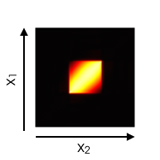
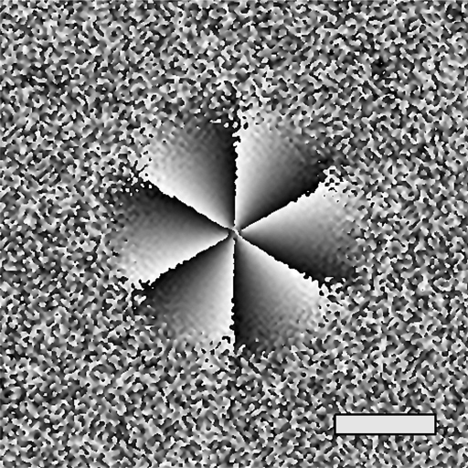
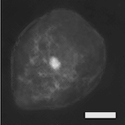
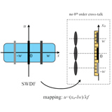
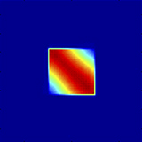
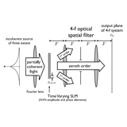
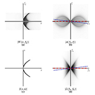

Profile and Research Interests
I am a research scientist at
the
Singapore-MIT Alliance for
Research and Technology (SMART) Centre in
the
BioSystems
and Micromechanics (BioSyM) interdisciplinary research group. I
received my Ph.D. in Electrical Engineering from Stanford University.
My research interests are in computational approaches to optics, with
particular focus on coherence and phase retrieval, numerical
optimization, phase space and three-dimensional display.
-

Coherence Retrieval (Phase Space Tomography)
— information carried by a partially coherent light beam is
embedded in the two-point field correlation of a cross section. Recovery of this information (e.g. of the mutual intensity or its phase space brethren) is called
coherence retrieval or
phase space tomography and requires solving an inverse problem based on measurements of the beam through known optical systems. Measurement system design and algorithms are open problems.
-

Novel Computational Phase Imaging Techniques
— recent developments in optimization algorithms as well as increases in computing power enable novel phase imaging techniques based on solving inverse problems founded on rigorous physical principles.
Select Publications
-

Zhengyun Zhang, Zhi Chen, Shakil Rehman, and George Barbastathis, "Phase imaging using shifted wavefront sensor images," Opt. Lett. 39, 6177–6180 (2014)
-

Lei Tian, Zhengyun Zhang, Jonathan C. Petruccelli, and George Barbastathis, "Wigner function measurement using a lenslet array," Opt. Express 21, 10511–10525 (2013)
-

Zhengyun Zhang, Zhi Chen, Shakil Rehman, and George Barbastathis, "Factored form descent: a practical algorithm for coherence retrieval," Opt. Express 21, 5759–5780 (2013)
-

Zhengyun Zhang, Analysis and synthesis of three-dimensional illumination using partial coherence, Ph.D. dissertation, Stanford University (2011)
-

Zhengyun Zhang, and Marc Levoy, "Wigner distributions and how they relate to the light field," in Computational Photography (ICCP), 2009 IEEE International Conference on, 1–10 (2009)
For a full list, please see my
curriculum vitae.
OSA journal articles © 2013–2014 Optical Society of America. One print or electronic copy may be made for personal use only. Systematic reproduction and distribution, duplication of any material in this paper for a fee or for commercial purposes, or modifications of the content of this paper are prohibited.
Software
-
A MATLAB library for coherence retrieval that estimates the mutual intensity matrix from noisy measurements via known linear optical systems. Implements the algorithm given in
the original paper, with improvements.
-
A real-time software package for rendering perspective and refocused images of light fields, with support for QImaging cameras. Written using PyQt and Qt4, and uses GLSL shaders to implement light field rendering.
Teaching